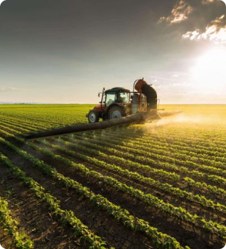
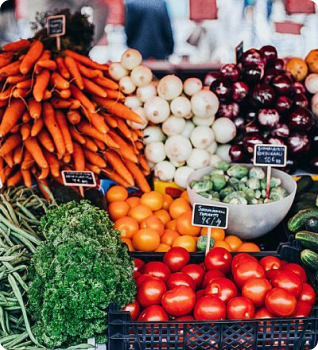
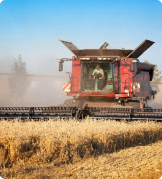

86,700
Successfully Project Completed
OUR INTRODUCTION
Pure Agriculture and Organic Form
We’re Leader in Agriculture Market
There are many variations of passages of available but the majority have suffered alteration in some form, by injected humou or randomised words even slightly believable.
- Organic food contains more vitamins
- Eat organic because supply meets demand
- Organic food is never irradiated
Agriculture Matters to the Future of Bangladesh

Agriculture
Natural way of agriculture

Agriculture
Natural way of agriculture

Agriculture
Natural way of agriculture

Agriculture
Natural way of agriculture